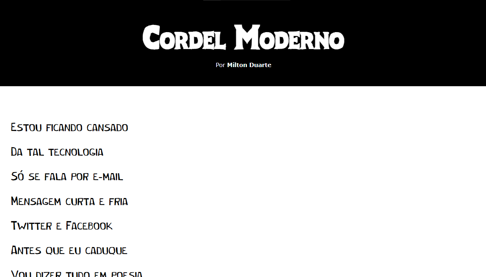

Meu nome é Lays Souza, conheci as tecnologias HTML e CSS aos 15 anos de idade, as usava como hobbie, pois tinha interesse profissional em outras áreas. Mas atualmente migrei de carreira e conheci mais afundo a programação e me apaixonei por frond end, decidi com muito entusiasmo que essa área será meu cotidiano profissional.
O site do android é um artigo sobre a história do sistema operacional Android, construi a partir de um projeto com o professor Gustavo Guanabara através da plataforma do curso em vídeo.
O projeto cordel é focado em um layout com imagens em efeito parallax, também construído como um projeto acadêmico através da plataforma curso em vídeo.
HTML5